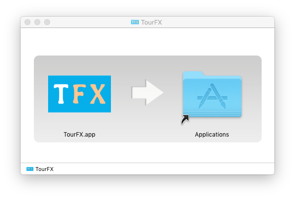

Установка программы на macOS
1) Скачайте дистрибутив программы последней версии по этой ссылке.
2) Запустите скаченный файл двойным кликом мыши. Откроется окно, в котором нужно перетащить иконку программы TourFX в папку Applications.

3) Запустите установленную программу TourFX.
4) Настройте программу для работы на одном компьютере (Однопользовательская версия) или для работы для нескольких пользователей с одной базой данных одновременно (Многопользовательская версия).
Остались вопросы? Напишите нам на e-mail